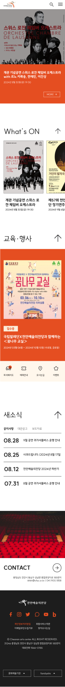
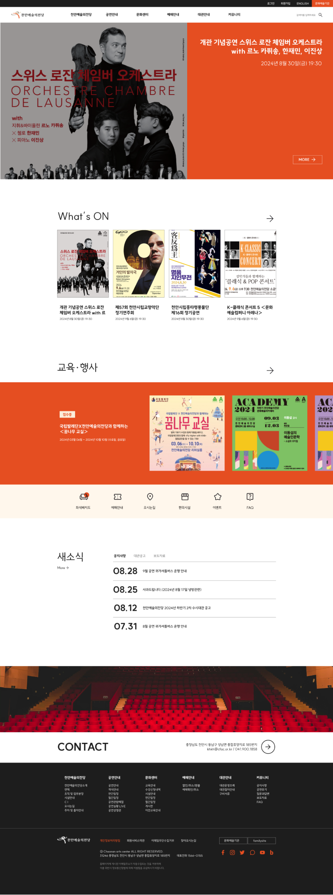
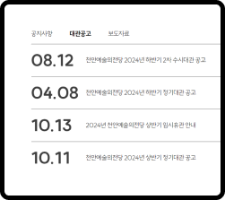

천안예술의전당
Cheonan arts center
기획의도
메인페이지에 전체적으로 회빛이 주로 사용되어 주요 공지들이 한눈에 들어오지 않음. 천안예술의전당의 주요 색인 cac red를 통해 보다 활기찬 이미지를 부여하고자 하였음. 공연, 행사 목록 등 중요 정보들을 크게 배치하여 강조함.
작업기간
기여도
사용프로그램
기여도
사용프로그램
6일
개인작업
Figma, Ilustrator, Photoshop, Html, CSS

글꼴
색상
- #EB6534
- #FCEDDA
- #1D1D1D



Main page
공연 위주의 공간. 관객들이 현재 진행중인 공연이 무엇인지 쉽게 알 수 있도록 팝업을 가장 위에 배치
Detail
진행중인 공연을 보다 상세하게 확인할 수 있는 공연 목록
Quick menu
사람들이 많이 찾는 메뉴를 쉽게 확인할 수 있도록 퀵메뉴 추가
News
공지사항 우측에 대관공고와 보도자료를 따로 분리배치하여 대관공고를 쉽게 확인 가능하도록 함.
Contact
대관 관련 파트는 공연장의 이미지를 크게 넣음으로서 대관 페이지로 넘어가기 전 미리 공연장의 모습을 한눈에 확인할 수 있도록 함.